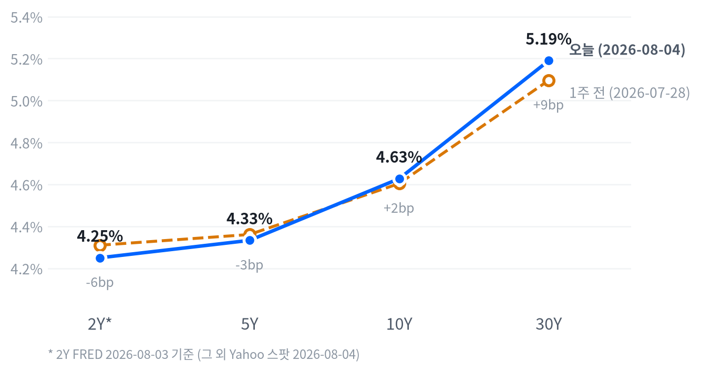

이날 장을 이끈 동인은 지정학 리스크 완화와 개별 실적 서프라이즈라는 두 축이었다. 트럼프 대통령이 이란에 대한 계획된 군사 타격을 취소했다는 소식이 WTI 급락(-6.24%)과 국채금리 하락(10Y -5.9bp)을 동시에 이끌며 위험자산 전반의 리레이팅으로 이어졌고, 여기에 팔란티어의 "otherworldly growth" 실적(장중 +29%)이 AI 수요 지속에 대한 투자자 확신을 재확인시키며 나스닥 상승 폭을 키웠다.
중국산 광모듈 수입 규제 검토 보도와 FMS 2026 개막이라는 두 개의 업종 특화 촉매까지 겹치며 AI인프라·메모리 밸류체인이 지수 상승 폭을 한층 증폭시켰다.
크로스에셋 정합성은 대체로 견고하다. 주식(리스크온)·채권(금리 하락)·원자재(유가 급락)·원화(강세)가 모두 "지정학 리스크 완화"라는 하나의 서사로 설명되며, 방어 섹터(Energy·Utilities)가 소외되고 경기·성장 민감 섹터가 주도한 점도 이 서사와 부합한다. 다만 금(+2.47%)이 리스크온 국면에서도 함께 오른 점은 다소 이례적인데, 인상 리스크가 여전히 시장 논의의 중심에 있는 가운데 최근 지표(6월 CPI·PCE 둔화)가 되살린 금리 인하 기대와 달러 약세가 안전자산 수요 못지않게 금값을 지지한 것으로 볼 수 있다.
다음 촉매는 이란-미국 협상의 실제 진전 여부, 이번 주 예정된 빅테크 후속 실적, 그리고 다음 FOMC(9/16)까지 이어질 인플레이션·고용 지표다. 8/4 기준 최신 지표는 인플레이션 둔화·고용 안정 신호를 보였지만 시장은 여전히 9월 인상 가능성을 논의 중이므로, 협상이 재결렬되거나 후속 지표가 다시 뜨겁게 나올 경우 오늘의 랠리와 금리 하락 모두 빠르게 되돌려질 수 있어 포지션 확대는 단계적으로 접근할 필요가 있다.
| 지수 | 종가 | 등락 | 등락률 |
|---|---|---|---|
| Nasdaq | 26,584.99 | +671.09 | +2.59% |
| S&P 500 Growth | 141.53 | +3.29 | +2.38% |
| Russell 2000 | 3,036.98 | +55.07 | +1.85% |
| S&P 500 | 7,736.52 | +136.02 | +1.79% |
| Dow | 54,085.88 | +907.47 | +1.71% |
| S&P 500 Value | 235.67 | +2.58 | +1.11% |
| 섹터 | 종가 | 등락 | 등락률 |
|---|---|---|---|
| Technology | 186.90 | +8.86 | +4.98% |
| Materials | 52.00 | +0.99 | +1.94% |
| Industrials | 186.40 | +3.24 | +1.77% |
| Financials | 57.88 | +0.50 | +0.87% |
| Comm. Services | 112.04 | +0.70 | +0.63% |
| Consumer Staples | 85.37 | +0.51 | +0.60% |
| Consumer Disc. | 118.29 | +0.08 | +0.07% |
| Real Estate | 45.17 | -0.01 | -0.02% |
| Health Care | 162.10 | -0.14 | -0.09% |
| Energy | 58.52 | -0.27 | -0.46% |
| Utilities | 44.11 | -0.25 | -0.56% |
3대 지수 모두 09:30 개장가가 그대로 장중 저점이었고 이후 반락 없이 15:30 마감 직전까지 상승폭을 계속 늘려가는 전형적인 우상향 궤적을 그렸다. 나스닥은 개장가 대비 장중 고점(15:30)에서 +2.19%까지 올랐고 S&P500(+1.67%)·러셀2000(+1.77%)도 비슷한 폭으로 밀어 올려, 장 초반 조정 없이 매수세가 장 마감까지 이어진 하루였다.
이런 흐름은 트럼프 대통령이 이란에 대한 계획된 군사 타격을 취소했다는 소식과 팔란티어의 실적 서프라이즈(장중 +29%)가 장 시작 전부터 위험선호 심리를 지지한 결과로 볼 수 있다. 나스닥 상승 종목이 하락 종목을 3,244 대 1,099로 압도할 만큼 상승 폭이 넓었다는 점도 이날 랠리가 소수 대형주에 국한되지 않았음을 뒷받침한다.
엔비디아는 09:30 개장(210.68달러) 이후 10:30에 장중 저점(209.05달러, 개장가 대비 -0.77%)을 찍고 되돌린 뒤 15:00에 장중 고점(213.06달러, +1.13%)까지 오르는 등 지수보다 변동성이 큰 하루를 보내며 종가는 +2.56%로 마감했다. 지수 저점이 개장 직후에 형성된 것과 달리 엔비디아 저점이 1시간가량 늦은 10:30에 나온 점은 개장 초반 매수세가 대형 반도체주보다 팔란티어·AI인프라 테마주에 먼저 쏠렸을 가능성을 시사한다.
이날 랠리는 지정학 리스크 완화라는 거시 재료와 팔란티어라는 개별 실적 서프라이즈가 동시에 맞물린 이중 촉매형 상승이다. Technology(+4.98%)가 압도적 최상위권을 기록했고 Materials(+1.94%)·Industrials(+1.77%) 등 경기민감 섹터도 고르게 강세를 보인 반면, Energy(-0.46%)·Utilities(-0.56%)는 유가 급락과 위험선호 전환에 따른 방어주 자금 이탈로 유일하게 하락했다.
S&P500 Growth(+2.38%)가 Value(+1.11%)를 두 배 넘게 앞선 점은 금리 하락과 AI 성장주 쏠림이 동시에 작용한 결과로 읽힌다. Real Estate(-0.02%)·Health Care(-0.09%)도 방어 성격의 업종이 소외됐다는 점에서 전형적인 리스크온 로테이션과 부합한다.
다만 오늘의 상승 폭 대부분이 지정학 뉴스 하나와 팔란티어라는 단일 종목 서프라이즈에 크게 의존하고 있어, 이란-미국 협상의 실제 진전 여부와 이번 주로 예정된 다른 빅테크 실적을 확인하는 작업이 병행돼야 한다. 협상이 재차 결렬되거나 후속 실적이 팔란티어만큼의 서프라이즈를 보여주지 못하면 오늘의 급등 폭 일부가 되돌려질 수 있다.
| 만기 | 08-04 종가 | 전일比(bp) | 1주 전 | 주간 변화(bp) |
|---|---|---|---|---|
| 2Y* | 4.25% | -3.0bp | 4.31% | -6.0bp |
| 5Y | 4.333% | -6.7bp | 4.361% | -2.8bp |
| 10Y | 4.627% | -5.9bp | 4.604% | +2.3bp |
| 30Y | 5.190% | -4.1bp | 5.096% | +9.4bp |

2Y*(FRED 2026-08-03)·5Y·10Y·30Y(Yahoo 2026-08-04) 국채금리 커브 — 별표(*) 표기된 2Y는 스팟 지수가 없어 하루 이상 뒤진 기준일의 FRED 값임에 유의. 1주 전 대비 2Y는 6.0bp, 5Y는 2.8bp 내린 반면 10Y·30Y는 각각 2.3bp·9.4bp 올라 장기 구간일수록 상승폭이 컸다.
당일(08-04) 기준으로는 전 구간 금리가 하락했는데 낙폭은 5Y(-6.7bp)가 가장 크고 30Y(-4.1bp)가 가장 작아, 벨리 구간이 초과 강세를 보이며 5s30s 스프레드가 하루 만에 2.6bp 넓어지는 불 스티프닝이 나타났다. 같은 기준일(8/4, Yahoo)의 5s30s 스프레드는 85.7bp를 기록했다.
2s10s 스프레드는 표에 찍힌 기준(2Y FRED 8/3 vs 10Y Yahoo 8/4)으로 +37.7bp, 동일자 FRED 기준으로는 +45.0bp로 두 값의 차이가 7.3bp에 달한다. 두 다리의 기준일이 다른 데서 오는 차이이므로 이 격차를 하루짜리 커브 변화로 해석해서는 안 된다.
1주 전 대비로 보면 10Y(+2.3bp)·30Y(+9.4bp)가 나란히 오른 반면 2Y(FRED 기준, -6.0bp)·5Y(-2.8bp)는 하락해 전체적으로는 베어 스티프닝 색채가 짙다. 다만 2Y의 비교 구간(7/27→8/3)이 나머지 만기의 비교 구간(7/28→8/4)과 하루 어긋나 있는 만큼, 2Y의 방향성을 장기물과 나란히 놓고 단정하기보다는 참고치로 활용하는 편이 안전하다.
듀레이션 전략 측면에서는 오늘 하루의 금리 하락이 지정학 리스크 완화라는 일회성 재료에 기댄 반면 주간 기준으로는 장기물 금리가 여전히 오름세라는 점에서, 장기물 비중을 서둘러 확대하기보다 벨리 구간 위주로 대응하고 다음 FOMC(9/16)까지 인플레이션·고용 지표 흐름을 추가로 확인한 뒤 장기 듀레이션 편입 여부를 판단하는 편이 합리적이다.
| 통화쌍 | 종가 | 등락 | 등락률 |
|---|---|---|---|
| DXY | 99.88 | -0.08 | -0.08% |
| USD/KRW | 1,429.45 | -6.25 | -0.44% |
| USD/JPY | 157.744 | +0.162 | +0.10% |
| EUR/USD | 1.1535 | -0.0009 | -0.07% |
USD/JPY는 개장(157.339엔) 이후 10:30에 장중 고점(157.958엔, 개장가 대비 +0.39%)을 찍었다가 14:30에 장중 저점(157.205엔, -0.09%)까지 되돌린 뒤 종가는 157.744엔(전일比 +0.10%)으로 소폭 엔 약세 마감했다. 고점과 저점 폭이 크지 않아 이날 엔화는 방향성 재료 없이 좁은 박스권에서 움직인 하루였다.
DXY(-0.08%)는 위험선호 회복과 함께 소폭 약세를 보였고, EUR/USD(-0.07%)도 달러 인덱스 하락 폭과 대체로 궤를 같이했다. USD/KRW(-0.44%)는 미국 증시 급등에 따른 위험자산 선호가 원화 강세로 이어진 결과로, 이날 FX 시장 전반은 주식·채권 시장의 리스크온 서사와 대체로 정합적으로 움직였다.
| 품목 | 종가 | 등락 | 등락률 |
|---|---|---|---|
| WTI | $75.33 | -5.01 | -6.24% |
| Brent | $78.86 | -4.91 | -5.86% |
| Natural Gas | $2.687 | -0.094 | -3.38% |
| Gold | $4,133.30 | +99.60 | +2.47% |
이날 최대 변동 품목은 WTI(-6.24%)였다. 정규장 개장 전인 05:30에 장중 고점(82.33달러, 개장가 대비 +1.40%)을 찍은 뒤 16:30 장중 저점(75.11달러, 개장가 대비 -7.49%)까지 미끄러지며 하루 만에 고점 대비 낙폭이 9%에 육박했는데, 이는 트럼프 대통령의 이란 공습 계획 철회 소식이 아시아·유럽 장 시간대부터 유가를 강하게 눌렀음을 보여준다. Brent(-5.86%)도 WTI와 유사한 폭으로 급락해 국제 벤치마크 전반에 지정학 리스크 프리미엄이 빠르게 빠졌다.
Gold는 06:00 장중 저점(4,101.40달러, 개장가 대비 -0.15%)을 찍은 뒤 되돌려 13:00에 장중 고점(4,163.80달러, +1.37%)까지 오르고서 종가는 4,133.30달러(전일比 +2.47%)로 상승 마감했다. 위험자산 랠리 속에서도 금이 함께 오른 것은 이례적인데, 이란 관련 강경 발언이 완전히 걷히지 않은 데 따른 안전자산 수요와 인플레이션 둔화에 따른 금리 인하 기대 되살아남·달러 약세가 겹친 결과로 풀이된다.
Natural Gas(-3.38%)는 원유와 같은 방향으로 하락했지만 낙폭은 상대적으로 작아, 이번 지정학발 유가 충격의 영향권에서 다소 벗어나 있었던 것으로 보인다.
| 자산군 | 판단 | 근거 |
|---|---|---|
| 주식 | 리스크온 유지, 단계적 확대 | 지정학 리스크 완화와 팔란티어 실적 서프라이즈가 겹친 이중 촉매형 상승, 상승 종목이 하락 종목을 3배 이상 압도할 만큼 폭이 넓었으나 단일 뉴스·단일 종목 의존도가 커 협상 진전 확인이 병행돼야 함 |
| 채권 | 벨리 중심 중립 듀레이션 | 당일 전 구간 금리 하락에도 주간 기준으로는 장기물(10Y·30Y)이 오름세라 장기물 확대는 9/16 FOMC까지 지표 흐름을 확인한 뒤 판단 |
| FX | 좁은 박스권, 방향성 베팅 자제 | USD/JPY가 장중 고점·저점 폭이 크지 않은 채 좁게 움직였고 DXY·EUR/USD도 소폭 변동에 그쳐 뚜렷한 추세 신호 부재 |
| 원자재 | 유가 숏 바이어스, 금 보유 유지 | WTI·Brent 모두 지정학 리스크 완화로 급락 추세 진입 가능성이 있는 반면, 금은 금리 인하 기대·달러 약세·잔존 안전자산 수요가 겹쳐 견조 |
| 메모리 | FMS 2026 모멘텀 확대 국면 | 마이크론(+7.62%)·웨스턴디지털(+4.05%) 등 미국 상장 메모리·저장장치주가 FMS 2026 개막과 HBF 표준 공개를 계기로 동반 강세, 2027년 물량 선판매 완료 보도로 공급 타이트 지속 확인 |
| AI 인프라 | 광통신·부품 테마 강도 확인, 선별 확대 | 마벨(+12.80%)·코히런트(+12.35%)·루멘텀(+8.92%)이 중국산 광모듈 규제 검토 보도로 폭등, 실제 규제 확정 여부와 마벨 2분기 실적 확인이 지속가능성의 핵심 변수 |
이란-미국 협상 재결렬: 오늘의 공습 철회가 일회성 조치에 그치고 협상이 실질적 진전 없이 결렬되면 유가와 지정학 리스크 프리미엄이 재부상하며 오늘의 리스크온 랠리와 금리 하락이 빠르게 반전될 수 있다.
광모듈 규제안 무산 또는 후퇴: 중국산 광트랜시버 수입 규제가 검토 단계에 그치거나 최종 확정되지 않으면 마벨·코히런트·루멘텀의 오늘 급등 폭 상당 부분이 되돌려질 위험이 있다.
후속 빅테크 실적 실망: 팔란티어발 AI 수요 서프라이즈가 이번 주 예정된 다른 대형 기술주 실적에서 재확인되지 않으면, 팔란티어 단일 종목에 의존한 오늘의 나스닥 상승 폭이 과도했다는 재평가가 나올 수 있다.
AI 인프라·광통신 부품 폭등 (마벨 +12.80%·코히런트 +12.35%·루멘텀 +8.92%) — 트럼프 행정부가 AI 인프라 사이버보안 리스크를 이유로 차세대 중국산 광트랜시버 수입 금지를 검토 중이라는 보도가 직접 촉매다. 미국 클라우드 업체들의 자국산 공급망 전환 기대가 관련주 전반에 반영됐고, 마벨은 FMS 2026에 맞춰 차세대 AI 메모리·스토리지 확장 솔루션을 공개하며 2분기 실적 발표를 앞두고 별도 매수세가 유입됐다.
메모리·저장장치 동반 강세 (마이크론 +7.62%·웨스턴디지털 +4.05%) — 8/4~6 산타클라라에서 개막한 FMS 2026이 직접 촉매로 작용했다. SK하이닉스·샌디스크가 차세대 스토리지 표준 HBF 규격을 공개했고 삼성전자도 HBM4E·HBM5 등 차세대 3D 메모리 비전을 선보이며, 3사가 2027년 DRAM·HBM 물량을 상당 부분 선판매 완료했다는 보도가 공급 타이트 지속 근거로 인용됐다.
팔란티어 실적 서프라이즈 — "otherworldly growth"로 평가받는 실적을 발표하며 주가가 장중 +29% 급등, AI 수요 지속에 대한 투자자 확신을 재확인시켰다. 나스닥 상승 종목이 하락 종목을 3,244 대 1,099로 압도할 만큼 이날 랠리가 폭넓게 확산된 배경으로 꼽힌다.
| 종목 | 종가 | 등락 | 등락률 |
|---|---|---|---|
| Micron | $892.67 | +63.17 | +7.62% |
| Western Digital | $548.56 | +21.34 | +4.05% |
| Nvidia | $211.94 | +5.30 | +2.56% |
| Seagate | $845.35 | +14.29 | +1.72% |
| SK hynix | ₩1,577,000 | +10,000 | +0.64% |
| Samsung Elec | ₩240,000 | +500 | +0.21% |
메모리 업계 최대 행사인 FMS 2026(Flash Memory Summit)이 8/4~6 산타클라라에서 개막하며 이날 랠리의 직접 촉매가 됐다. SK하이닉스는 샌디스크와 함께 HBM과 SSD 사이의 새로운 메모리 계층인 HBF(High Bandwidth Flash) 최초 규격을 공개했는데, HBM급 고속 전송을 유지하면서 낸드 기술로 용량을 크게 확장하는 것이 골자이며 구글·텐스토렌트가 컨소시엄에 참여했다.
삼성전자는 같은 행사에서 HBM4E·HBM5·LPDDR5X-PIM·PM1763 등 AI向 메모리·스토리지 포트폴리오와 400단 이상 V10 V낸드, zHBM/zNAND-O 개념 모델을 공개하며 차세대 3D 메모리 비전을 제시했다. 3사가 2027년 DRAM·HBM 생산 물량 상당 부분을 이미 선판매 완료했고 8월 기준 낸드 생산능력도 거의 풀 부킹 상태라는 보도가 있어, AI 서버向 HBM·고성능 DRAM 수요가 견조하다는 근거로 인용된다.
마이크론(+7.62%)은 DRAM·낸드 가격이 생산자들의 CAPEX 축소 속에서도 견조하게 유지되고 있다는 점이 상승 재료로 거론됐다. 투자 관점에서는 FMS 2026 기간 동안 발표될 후속 신제품·파트너십 뉴스가 이번 상승의 지속가능성을 가늠하는 핵심이 될 전망이며, 최근 수주간 메모리주 변동성이 컸던 만큼 실적 이벤트 리스크도 함께 점검할 필요가 있다.
| 종목 | 분야 | 종가 | 등락 | 등락률 |
|---|---|---|---|---|
| Marvell | 반도체/데이터센터 커넥티비티 | $218.59 | +24.81 | +12.80% |
| Coherent | 광통신 부품 | $323.73 | +35.59 | +12.35% |
| Lumentum | 광통신 부품 | $849.47 | +69.58 | +8.92% |
| Vertiv | 데이터센터 냉각/전력관리 | $269.93 | +6.88 | +2.62% |
| GE Vernova | 전력 인프라/터빈 | $1,018.53 | +11.77 | +1.17% |
이날 최대 상승 업종은 광통신 부품·AI 인프라였다. 트럼프 행정부가 AI 인프라 사이버보안 리스크를 이유로 차세대 중국산 광트랜시버 수입을 금지하는 방안을 검토 중이라는 보도가 나오며 관련주가 일제히 급등했는데, 코히런트(+12.35%)·루멘텀(+8.92%) 외에도 Applied Optoelectronics가 장중 +20% 이상, 코히런트가 장중 약 +18%까지 치솟았다는 보도가 있어 종가보다 장중 변동 폭이 훨씬 컸음을 시사한다. 미국 클라우드 업체들이 자국산 공급망으로 조달을 전환할 것이라는 기대가 코닝 등 관련주 전반에도 반영됐다.
마벨(+12.80%)은 FMS 2026 개막에 맞춰 차세대 에이전틱 AI·대규모 모델 추론向 AI 메모리·스토리지 확장 솔루션을 공개하며 주가가 200달러선을 돌파했다. 2분기 실적 발표를 앞두고 나온 신제품 프리뷰라는 점에서 실적 기대까지 함께 반영된 것으로 보이며, 엔비디아가 마벨을 긍정적으로 언급했다는 보도도 루멘텀·코닝 등 광네트워킹 관련주 강세에 후광 효과를 더했다.
GE 버노바(+1.17%)·버티브(+2.62%)는 상대적으로 상승폭이 작아 개별 촉매보다 업종 전반 리레이팅의 수혜에 가깝다. 데이터센터 전력 수요 급증이라는 구조적 배경 속에서 버티브는 엔비디아의 800V 직류 전력 아키텍처 로드맵에 맞춰 하반기 800VDC 전력 포트폴리오 출시를 준비 중이며, 투자 관점에서는 광통신 부품주의 규제 이슈가 실제 확정되는지와 마벨의 2분기 실적이 다음 확인 포인트다.
| 지표 | Actual | Forecast | Previous | 발표일/기준 | 판정 |
|---|---|---|---|---|---|
| Initial Jobless Claims (07-25주) | 197K | 201K | 188K | 2026-07-30 발표 | 하회▼ |
| Initial Claims 4주 이동평균 | 202.75K | — | 207.75K | 2026-07-30 발표 | — |
| Continuing Jobless Claims (07-18주) | 1,782K | — | 1,789K | 2026-07-30 발표 | — |
| JOLTS 구인건수 | 7,359K | — | 7,537K | 기준월: 2026-06 | — |
| 비농업고용 (전월비) | +57K | — | +129K | 기준월: 2026-06 | — |
| 실업률 | 4.2% | — | 4.3% | 기준월: 2026-06 | — |
| 시간당 평균임금 MoM | +0.35% | — | +0.27% | 기준월: 2026-06 | — |
| 지표 | Actual | Forecast | Previous | 발표일/기준 | 판정 |
|---|---|---|---|---|---|
| ISM 제조업 PMI (7월) | 55.6 | 54.0 | 53.3 | 2026-08-03 발표 | 상회▲ |
| 실질GDP 성장률 (연율, 2Q26 속보치) | +1.5% | — | +2.1% | 기준분기: 2026 2Q | — |
| 산업생산 MoM | +0.08% | — | +0.14% | 기준월: 2026-06 | — |
| 내구재수주 MoM | +0.47% | — | -4.00% | 기준월: 2026-06 | — |
| 신규주택판매 | 628K | — | 618K | 기준월: 2026-06 | — |
| 기존주택판매 | 4.09M | — | 4.19M | 기준월: 2026-06 | — |
| 지표 | Actual | Forecast | Previous | 발표일/기준 | 판정 |
|---|---|---|---|---|---|
| 소매판매 MoM | +0.22% | — | +1.02% | 기준월: 2026-06 | — |
| 미시간대 소비자심리지수 | 49.5 | — | 44.8 | 기준월: 2026-06 | — |
| 지표 | Actual | Forecast | Previous | 발표일/기준 | 판정 |
|---|---|---|---|---|---|
| CPI YoY | 3.73% | — | 4.27% | 기준월: 2026-06 | — |
| CPI MoM | -0.42% | — | +0.47% | 기준월: 2026-06 | — |
| Core CPI YoY | 2.81% | — | 2.96% | 기준월: 2026-06 | — |
| Core CPI MoM | -0.02% | — | +0.21% | 기준월: 2026-06 | — |
| PPI 최종수요 MoM | -0.28% | — | +0.62% | 기준월: 2026-06 | — |
| PCE 물가지수 YoY | 3.67% | — | 4.08% | 기준월: 2026-06 | — |
| Core PCE YoY | 3.29% | — | 3.42% | 기준월: 2026-06 | — |
| 미시간대 1년 기대인플레이션 | 4.6% | — | 4.8% | 기준월: 2026-06 | — |
ISM 제조업 PMI(55.6)가 컨센서스(54.0)를 크게 웃돌며 2022년 5월 이후 최고치를 기록했고, 신규주문지수(56.7)도 7개월 연속 확장세를 이어갔다. 초회 신규실업수당청구(197K)는 컨센서스(201K)를 하회해 고용시장이 안정적임을 재확인시켰고, 4주 이동평균(202.75K)도 5월 중순 이후 최저 수준으로 낮아졌다.
CME FedWatch의 9월 회의 확률은 자료마다 크게 엇갈린다. 일부 매체는 7/28 기준 9월 인상 확률이 63~82%에 달한다고 보도한 반면, 다른 집계 사이트는 같은 시점 9월 인하 확률 54.4%를 제시해 방향성 자체가 상반된다. 인상 우세 보도가 CNBC·Forbes·Bloomberg 등 신뢰도 높은 매체에서 반복 확인되는 만큼, 구체적인 확률 수치보다는 "인상 리스크가 시장 논의의 중심에 있다"는 방향성으로 접근하는 편이 안전하다.
다만 2Y 금리가 전일 대비 -3.0bp 하락하고 국채 금리가 전 구간에서 내린 점은 6월 CPI·PCE의 뚜렷한 둔화가 최근 며칠 새 인상 베팅을 일부 되돌렸을 가능성과 정합적이다. 뉴욕 연은 윌리엄스 총재도 "통화정책이 적절한 위치에 있다"며 하반기 인플레이션 둔화를 예상한다고 언급해 매파 일변도는 아니라는 균형 신호를 보탰다.
Labor축은 개선 우세다. 초회 청구(197K)·4주 평균(202.75K)·계속 실업수당(1,782K)이 모두 전주 대비 개선되거나 안정적이었고 실업률도 4.2%로 낮아졌지만, 후행 지표인 6월 비농업고용(+57K)은 5월(+129K) 대비 큰 폭 둔화돼 선행성 주간 데이터와 후행성 월간 데이터가 다소 엇갈린다.
Activity축은 뚜렷한 개선이다. ISM 제조업(55.6)이 컨센서스를 크게 상회하며 신규수주까지 확장을 이어간 선행 신호가 강하지만, 후행 지표인 2분기 실질GDP(+1.5%)는 1분기(+2.1%) 대비 둔화돼 서베이의 개선세가 아직 확정 지표로는 완전히 확인되지 않았다.
Consumption축은 혼조다. 미시간대 소비자심리(49.5)가 전월(44.8) 대비 큰 폭 개선된 선행 신호를 냈지만, 실제 지출을 보여주는 소매판매 MoM(+0.22%)은 전월(+1.02%) 대비 증가세가 크게 둔화돼 심리 개선이 아직 지출 확대로 이어지지 않았다.
Inflation축은 선행·후행이 함께 일치하는 축이다. CPI·Core CPI·PCE·Core PCE YoY가 모두 전월 대비 낮아졌고 미시간대 1년 기대인플레이션(4.6%)도 전월(4.8%)보다 완화돼, 디스인플레이션이 실제 물가와 기대 인플레이션 양쪽에서 동시에 진행되고 있다. Labor·Consumption 두 축의 선행-후행 불일치는 향후 지표 변동성을 키울 수 있는 요인으로 남아 있다.
기본 시나리오는 완만한 성장 둔화 속에서 디스인플레이션이 이어지는 경로다. CPI·Core PCE YoY가 6월 기준 이미 3%대까지 낮아졌고 기대인플레이션도 함께 완화되는 가운데, 이날 유가 급락(-6.24%)까지 더해지면 다음 CPI 발표에서 추가 둔화가 확인될 가능성이 있다.
대안 시나리오는 ISM 제조업의 강한 신규수주가 예고하는 활동 재가속이 이어지며 임금·서비스 물가가 다시 끈적해지는 경로다. 9-3 표결로 동결한 7/29 FOMC에서 3명의 반대표가 모두 인상을 주장했다는 점에서, 이란 협상이 재차 결렬돼 유가가 반등하면 9월 인상 논의가 다시 힘을 받을 수 있다.
시나리오를 가를 핵심 일정은 다음 FOMC(9/16)까지 발표될 고용·인플레이션 지표와 이란-미국 협상의 진전 여부다. 자산배분 관점에서는 장기 듀레이션 확대와 유가 방향성 베팅 모두 이 일정들을 확인한 뒤 단계적으로 조정하는 편이 합리적이다.